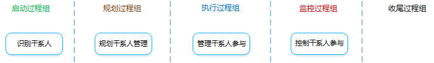
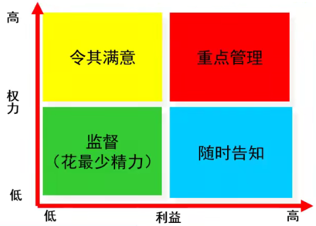
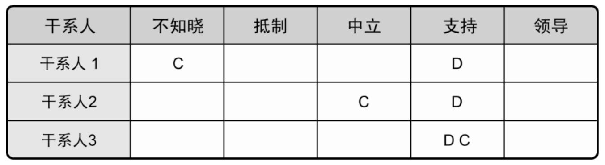

项目干系人管理

项目干系人管理是什么？：对项目干系人需求、希望和期望的识别，并通过沟通上的管理来满足其需要、解决其问题的过程。
是什么？：识别能影响项目或者受项目影响的全部人员、群体或组织，分析干系人对项目的期望和影响。
应按照干系人的利益、影响力和参与项目的程度对其进行分类。
应该全过程识别干系人，定期审查和更新。
有什么作用？：帮助项目经理建立对各个干系人或干系人群体的适度关注。
项目章程
采购文件
合同各方都是关键的项目干系人，也应该把其他相关方（如供应商）视为项目干系人。
事业环境因素
组织过程资产
干系人分析
是什么？：识别出干系人的利益、期望和影响，并把他们与项目的目的联系起来。
分析步骤？：
干系人权力/利益方格：

专家判断
会议
干系人登记册
是什么？：用于记录已识别的干系人的所有详细信息。
包含哪些内容？：
基本信息
姓名、职位、地点、项目中角色、联系方式等。
评估信息
主要需求、主要期望、影响、与生命周期的哪个阶段最为紧密等。
干系人分类
内部/外部、正面/中立/负面、上级/下级/外围/横向、四象限（重点/观察）等。
是什么？：是基于对干系人需要、利益及对项目成功的潜在影响的分析，制定合适的管理策略，以有效调动干系人参与整个项目生命周期的过程。
有什么作用？：为与项目干系人的互动提供清晰且可操作的计划，以支持项目利益。
专家判断
会议
分析技术
干系人参与评估矩阵：
C—当前参与程度，D—所需参与程度

干系人管理计划
是什么？：为有效调动干系人参与而规定所需的管理策略。
包含哪些内容？：
项目文件更新
是什么？：在整个项目生命周期中，与干系人进行沟通和协作，以满足其需要与期望，解决实际出现的问题，促进干系人合理参与项目活动的过程。
有什么作用？：帮助项目经理提升来自干系人的支持，并把干系人的抵制降到最低，显著提高项目成功的机会。
包含哪些活动？：
干系人管理计划
沟通管理计划
变更日志
变更日志用于记录项目期间发生的变更，应该与适当的干系人就这些变更及其对项目时间、成本和风险等的影响进行沟通。
组织过程资产
沟通方法
人际关系技能
应用人际关系技能来管理干系人的期望，例如：建立信任、解决冲突、积极倾听、克服变更阻力。
管理技能
应用管理技能来协调各方以实现项目目标，例如：引导人们对目标达成共识、施加影响支持项目、谈判达成共识、调整组织行为、接受成果。
问题日志
问题日志用于记录和监督问题的解决，应随新问题的出现和老问题的解决而动态更新。
三要素：
变更请求
项目管理计划更新
项目文件更新
组织过程资产更新
是什么？：全面监督项目干系人之间的关系，调整策略和计划，以调动干系人参与的过程。
有什么作用？：随着项目进展和环境变化，维持并提升干系人参与活动的效率和效果。